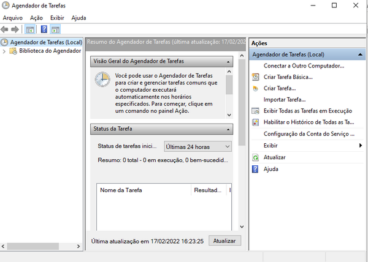

O aplicativo Agendador de Tarefas é uma ferramenta muito útil quando precisamos programar o computador para executar certas ações sozinho. Por exemplo, podemos programar um aplicativo para ser aberto sempre que o computador ligar, ou programar o computador para desligar ou reiniciar sempre num horário determinado. Podemos até mesmo incluir argumentos ao abrir aplicações, por exemplo, você precisa acessar um site todo dia às cinco da tarde? Programe uma tarefa para abrir o navegador todo dias às cinco da tarde e passe como argumento o site!
A utilização do Agendador de Tarefas é relativamente fácil e requer algumas etapas básicas:
1. Você precisa criar uma nova Tarefa.
2. Precisa definir um Disparador (O que deve acontecer para que a tarefa se inicie).
3. Você precisa definir uma Ação (O que a tarefa fará).
4. Em seguida salvar a tarefa.
Uma mesma tarefa pode ser disparada, a cada hora, a cada inicialização do computador, a cada dia, em dias ou horários específicos, em intervalos de tempo, quando determinados aplicativos forem abertos, etc.
Você pode acessar o Agendador de Tarefas indo até: Iniciar → Ferramentas Administrativas → Agendador de Tarefas.
Você pode ainda abrir o aplicativo Agendador de Tarefas pressionando ⊞+R e digitando: taskschd.msc